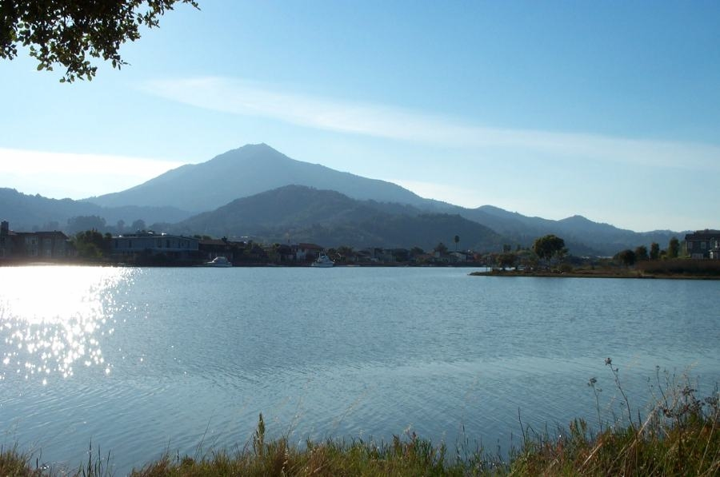

Blair White
Blog
Projects
Resume
About Me
Contact
About me...
Hello! I am from Larkspur, California, a city in Marin County which is north of San Francisco.
My hobbies include playing basketball, running, and traveling.
I graduated from Duke University in 2013. I attended Marin Catholic High School.
Something quirky about me is my irrational fear of sharks. I love to swim and be in the ocean but I am convinced the entire time I am in the water that I am about to become the victim of a Jaws encounter. I attribute this to watching too many nature documentaries as a child.
